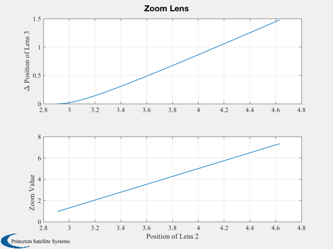

Compute the L3 lens position in a Cooke Triplet.
This demo moves the negative focal length lens to get a zoom and adjusts the third lens position so a parallel ray going in remains parallel. ------------------------------------------------------------------------- See also Plot2D, CookeTriplet -------------------------------------------------------------------------
Contents
%-------------------------------------------------------------------------- % Copyright (c) 2008-2009 Princeton Satellite Systems, Inc. % All rights reserved. %-------------------------------------------------------------------------- clear d;
Focal lengths
%---------------
d.f = [1.71 -0.27 1.71];
Nominal lens positions
%------------------------
d.x = [1.21 2.91 4.63];
Light ray location
%--------------------
d.y = 1;
xN = linspace(d.x(2), d.x(3));
n = length(xN);
x = zeros(1,n);
z = zeros(1,n);
Set up parameters for fminsearch
%---------------------------------- TolX = 1e-5; TolFun = 1e-5; MaxFunEvals = 1500; Options = optimset('TolX',TolX,'TolFun',TolFun,'MaxFunEvals',MaxFunEvals); for k = 1:n d.x(2) = xN(k); x(k) = fminsearch( 'CookeTriplet', 0, Options, d ); [t,z(k)] = CookeTriplet( x(k), d ); z(k) = abs(z(k)/d.y); end Plot2D( xN, [x;z], 'Position of Lens 2', {'\Delta Position of Lens 3','Zoom Value'}, 'Zoom Lens' ) %--------------------------------------